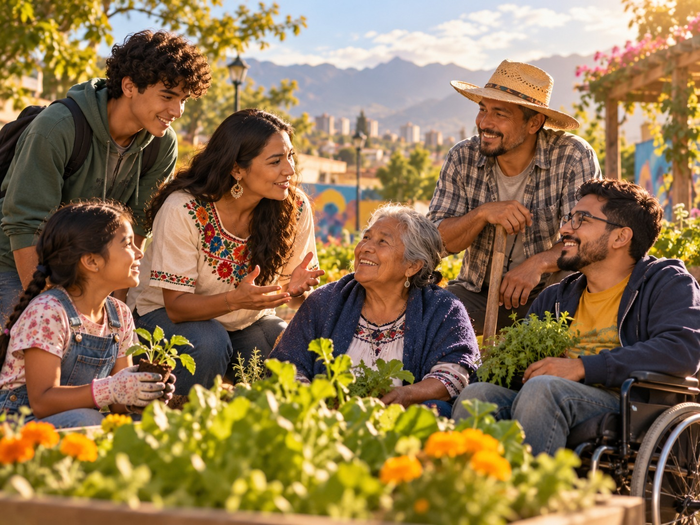

¿Cómo una decisión puede convertirse en una obra que transforma comunidades?
Las grandes transformaciones sociales no siempre comienzan con grandes organizaciones, recursos abundantes o proyectos completamente estructurados.
En muchas ocasiones comienzan cuando una persona observa una realidad, reconoce que existe una necesidad y decide actuar frente a ella.
A lo largo de esta presentación conocerás cómo diferentes decisiones relacionadas con el servicio, la comunicación, el liderazgo y la acción comunitaria fueron conectándose hasta contribuir a la consolidación de la Obra Minuto de Dios.
Para comprender las acciones del Padre Rafael García Herreros es necesario reconocer primero el contexto en el que desarrolló buena parte de su misión.
A mediados del siglo XX, Colombia atravesaba importantes transformaciones sociales.
Las ciudades crecían y recibían a numerosas familias que buscaban nuevas oportunidades. Sin embargo, ese crecimiento también hacía visibles diferentes problemáticas sociales.
CIUDADES EN CRECIMIENTO: el aumento de la población urbana generaba nuevos desafíos relacionados con vivienda, servicios y oportunidades.
VIVIENDA: muchas familias tenían dificultades para acceder a espacios adecuados y condiciones dignas para vivir.
EDUCACIÓN: las oportunidades de formación no estaban disponibles de la misma manera para todos los sectores de la población.
DESIGUALDAD: las posibilidades de desarrollo eran diferentes dependiendo de las condiciones económicas y sociales de las personas.
Eran problemáticas que afectaban a familias y comunidades completas y que requerían respuestas capaces de ir más allá de la ayuda ocasional.
Del reconocimiento de una necesidad a la decisión de actuar
Conocer una problemática no significa necesariamente transformarla.
Muchas personas pueden observar una situación de desigualdad, pobreza o falta de oportunidades y continuar con sus actividades cotidianas.
En el caso del Padre Rafael García Herreros ocurrió algo diferente.
Las necesidades que encontraba en su entorno se convirtieron en una invitación a preguntarse:
¿Qué puedo hacer frente a esta realidad?
Esta manera de comprender su misión comenzó a orientar sus decisiones.
No se trataba únicamente de brindar ayuda en un momento determinado, sino de buscar alternativas que pudieran generar mejores condiciones para las personas.
En ese propósito comenzaron a conectarse cuatro elementos:
SERVIR-Reconocer las necesidades de otros y comprometerse con ellas.
COMUNICAR-Hacer visibles diferentes realidades y generar conciencia.
LIDERAR-Convocar personas alrededor de un propósito común.
TRANSFORMAR-Convertir las acciones en oportunidades para las comunidades.
Cuando reconocer una necesidad implica actuar
El servicio fue uno de los principios que orientaron la manera en que el Padre Rafael comprendió su misión.
Servir no significaba simplemente entregar una ayuda o solucionar temporalmente una dificultad.
Implicaba acercarse a las personas, reconocer sus necesidades y buscar alternativas que permitieran mejorar sus condiciones de vida.
¿QUÉ CAMBIA CUANDO EL SERVICIO SE ENTIENDE DE ESTA MANERA?
Una necesidad deja de verse únicamente como un problema individual.
Por ejemplo, si una familia no cuenta con una vivienda adecuada, la respuesta puede atender una urgencia inmediata.
Pero también es posible preguntarse:
¿Qué condiciones originan esa situación?
¿Qué oportunidades necesita esa familia?
¿Cómo puede participar la comunidad?
¿Qué acciones podrían generar una solución más sostenible?
Esta mirada permite pasar de la ayuda momentánea al compromiso con la transformación.
LA HUELLA DEL SERVICIO
Reconocer la necesidad → comprometerse → actuar → buscar una transformación
Cuando una voz permite que otros también conozcan una realidad
Una transformación social necesita personas que reconozcan que existe una situación que requiere atención.
Por esta razón, la comunicación se convirtió en otra herramienta importante dentro de la misión del Padre Rafael García Herreros.
En 1950 comenzó a desarrollar una experiencia de comunicación que posteriormente se consolidaría como El Minuto de Dios.
A través de estos espacios podía compartir reflexiones y presentar situaciones sociales ante una audiencia cada vez más amplia.
Sin embargo, comunicar no significaba únicamente transmitir información.
El propósito también era lograr que las personas:
CONOCIERAN-Realidades que quizá no hacían parte de su experiencia cotidiana.
REFLEXIONARAN- Sobre las necesidades de otras personas y comunidades.
SE SENSIBILIZARAN-Frente a situaciones que necesitaban respuestas.
SE MOVILIZARAN-Para participar, aportar o apoyar diferentes iniciativas.
Una transformación necesita de otros
Reconocer necesidades y comunicar su existencia eran pasos importantes, pero los desafíos sociales que enfrentaban muchas comunidades superaban la capacidad de una sola persona.
Las iniciativas necesitaban conocimientos, recursos, trabajo y participación.
Por esta razón, otra característica importante de la obra impulsada por el Padre Rafael fue su capacidad para convocar a otros alrededor de un propósito común.
En este proceso podían participar:
Familias como protagonistas de los procesos de transformación.
Personas solidarias y voluntarios aportando tiempo, recursos y capacidades.
Educadores generando oportunidades de formación.
Líderes comunitarios articulando necesidades y capacidades de las comunidades.
Organizaciones sumando conocimientos, recursos y posibilidades de acción.
El liderazgo, desde esta perspectiva, no consiste únicamente en dirigir.
También significa: convocar + escuchar + articular + movilizar
Una solución puede generar nuevas oportunidades
Entre las problemáticas que enfrentaban muchas familias se encontraba la dificultad para acceder a una vivienda digna.
Frente a esta realidad, en 1957 el Padre Rafael impulsó la construcción de un barrio destinado a familias de escasos recursos en Bogotá.
La iniciativa permite comprender una idea importante dentro de su visión de transformación:
una vivienda podía ser el comienzo de un proceso mucho más amplio.
VIVIENDA-Contar con un espacio adecuado ofrece mejores condiciones para desarrollar la vida cotidiana.
FAMILIA-La estabilidad del hogar puede favorecer la construcción de vínculos y proyectos familiares.
COMUNIDAD-Las familias que comparten un territorio pueden encontrarse, organizarse y participar en iniciativas comunes.
OPORTUNIDADES-Alrededor de la comunidad pueden desarrollarse procesos de educación, formación, participación y desarrollo.
Por eso, la transformación no consistía únicamente en construir estructuras físicas.
También implicaba contribuir a la construcción de condiciones para una vida más digna.

De iniciativas particulares a una visión de transformación
Hasta este punto aparecen diferentes acciones:
SERVICIO-permitió reconocer necesidades y comprometerse con ellas.
COMUNICACIÓN-permitió hacer visibles las realidades y sensibilizar a otras personas.
LIDERAZGO-permitió convocar personas, conocimientos y recursos.
ACCIÓN COLECTIVA-permitió desarrollar iniciativas con una mayor capacidad de respuesta.
TRANSFORMACIÓN SOCIAL-permitió generar nuevas oportunidades para personas y comunidades.
Lo importante es comprender que estos elementos no funcionaron de manera aislada.
Comenzaron a relacionarse.
Una necesidad podía ser reconocida mediante el servicio, la comunicación podía hacerla visible, el liderazgo podía convocar personas, la participación permitía convertir esa voluntad en acciones. Y esas acciones podían producir nuevas oportunidades.
Las grandes transformaciones pueden comenzar cuando una persona decide no permanecer indiferente frente a una realidad.
Ahora es momento de comprobar lo aprendido durante el recorrido.